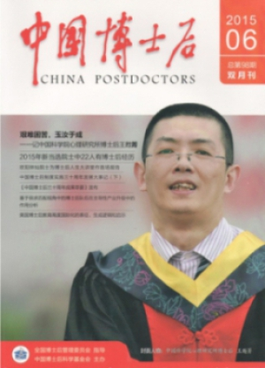

Doctor
Micro-Expression Laboratory (MeLab)
|
|
||||
| Su-Jing Wang | ||||
Doctor |
||||
|
Institute of Psychology, Chinese Academy of Sciences Micro-Expression Laboratory (MeLab) |
||||
|
Correspondence |
|||
| Mail: | Su-Jing Wang | Office: | Room 314, South Building, Institute of Psychology, Chinese Academy of Sciences |
| Room 314, South Building | Tel: | +86-010-6487-5971 | |
| Institute of Psychology, Chinese Academy of Sciences | URL: | http://www.sujingwang.name | |
| 16 Lincui Road, Chaoyang District, Beijing 100101, China | Email: | wangsujing at psych dot ac dot cn or wangsj dot jlu at gmail dot com | |
[Interest] [Education] [Award] [Activity] [Publication] [Selected Media Coverage]
Research Interests and Statements
Research on face recognition has had a revival in recent years. This is largely due to the need for robust face recognition technologies for consumers to tag digital photos and facilitate their organization and online sharing. Face recognition in consumer digital imaging suffers from multiple factors such as uncontrolled lighting, large pose variation, a range of facial expressions, make-up, and severe partial occlusions, etc. These factors can be modeled by constructing a multi-linear structure based on a high-order tensor. In the other hand, many researches proved the high dimensional facial image lies on a low dimensional manifold structure. I will devote myself to find the low dimensional manifold structure of the facial image tensor representations. Recently, spare representation is a hot topic in pattern recognition. It has a good performance on image alignment, dimensional reduction, etc. I will use spare representation on my further research. I hope that it can obtain better performance on the uncontrolled face recognition. Meanwhile, I also focus on age estimation, action recognition, iris recognition and multimodal biometric identification. I enjoy the above research.
| Ph.D. | College of Computer Science and Technology, Jilin University, China | 2008-2012 |
| Supervisor: Prof. Chun-Guang Zhou | ||
| Dissertation: Tensor Subspace on Manifold for Face Recognition, (in Chinese) | ||
| M.Sc. | College of Software, Jilin University, China | 2005-2007 |
| Supervisor: Prof. Zhen Chen | ||
| Dissertation: Research the Application of Concept Lattice in Data Mining. (in Chinese) | ||
| B.Sc. | Department Computer Science, Huaihai Institute of Technology, China | 1999-2002 |
| (Excellent Student of Huaihai Institute of Technology) | 2001 |
[goto top]
| The first prize of the 8th Wu Wenjun Artificial Intelligence Science and Technology Award | 2018 | |
| IBM Chinese Outstanding Students Scholarship | 2011 | |
| Twenty-fifth Graduate “Elite Cup” Academic Achievements Contest First Prize of Jilin University | 2011 | |
| The Second Scholarship for Excellent Postgraduate Student of Jilin University | 2009 | |
| Excellent Postgraduate Student of Jilin University | 2009 | |
| The Role Models for the Handicapped in Lianyungang City | 2005 | |
| Productive Worker of Jiangsu | 2004 | |
| Jiangsu Province Computer Contest First Prize for Handicapped People | 2002 | |
| The Spiritual Role Model in Jiangsu Province | 2001 | |
| “Ten Outstanding Youths” of Lianyungang City | 2001 | |
| Productive Worker of Lianyungang City | 2001 | |
| The National Self-educated Workers and Staff Award | 2000 | |
| Jiangsu Province Computer Contest First Prize for Handicapped People | 2000 | |
| The Self-educated Workers and Staff of Jiangsu Award | 1999 | |
| The Top Ten Role Models in Lianyungang City | 1999 | |
| The Top-notch Innovative Talents of Guanyun County | 1999 | |
| The First National College Computer Competition Finals Memorial Award | 1997 | |
| Excellent Graduate Student of Jiangsu Radio & TV University | 1997 | |
| Lianyungang City Computer Applications Contest Third Prize | 1995 | |
| The Best Youths of Guanyun County | 1993 |
[goto top]
[goto top]
Research on concealed emotion analysis and recognition method for social security. Supported by the National Natural Science Foundation of China, Grant U19B2032, Jan 2020-Dec 2023, Principal researcher.
Micro-expression detection and recognition based on deep learning, Supported by the National Natural Science Foundation of China, Grant 61772511, Jan 2018-Dec 2021, Principal researcher.
Micro-expression Recognition Based on Sparse Tensor, Supported by the National Natural Science Foundation of China, Grant 61379095, Jan 2014-Dec 2017, Principal researcher.
Micro-expression Recognition Based on Sparse Tensor and Deep Learning, Supported by Beijing Natural Science Foundation, Grant 4152055, Jan 2015 - Jun 2017, Principal researcher.
Tensor Presentation and Feature Extraction of Color Micro-expression Video, Supported by the China Postdoctoral Science Foundation, Grant 2012M520428, Aug 2012-Aug 2014, Principal researcher.
Sparse Presentation of Color Micro-expression Video, Supported by the Key Laboratory of Symbolic Computation and Knowledge Engineering of Ministry of Education, Jilin University. Grant 93K172013K04, Jan 2013-Dec 2014, Principal researcher.
Texture Extraction and Sparse Presentation of Color Micro-expression Video, Supported by the National Laboratory of Pattern Recognition. Grant 201306295, Jan 2014-Dec 2015, Principal researcher.
[goto top]
Publications {GoogleScholar}
2022
LI Jingting, DONG Zizhao, LIU Ye, WANG Su-Jing*, ZHUANG Dongzhe*. Micro-expression spotting method based on human attention mechanism [J]. Advances in Psychological Science, 2022. (in Chinese with English abstract )
Li Jingting, Wang Ting, Wang Su-Jing*. Facial Micro-Expression Recognition Based on Deep Local-Holistic Network [J]. Applied Sciences, 2022, 12(9): 4643.
Li Jingting, Dong Zizhao, Lu Shaoyuan, Wang Su-Jing*, Yan Wen-Jing, Ma Yinhuan, Liu Ye, Huang Changbing, Fu Xiaolan*. CAS(ME)3: A Third Generation Facial Spontaneous Micro-Expression Database with Depth Information and High Ecological Validity [J]. IEEE Transactions on Pattern Analysis and Machine Intelligence, 2022, 1-1.
Dong Zizhao, Wang Gang, Lu Shaoyuan, Li Jingting, Yan Wenjing, Wang Su-Jing*. Spontaneous Facial Expressions and Micro-expressions Coding: From Brain to Face [J]. Frontiers in Psychology, 2022, 12:1664-1078.
2021
Dong Zizhao, Wang Gang, Lu Shaoyuan, Yan Wen-Jing, Wang Su-Jing*. A Brief Guide: Code for Spontaneous Expressions and Micro-Expressions in Videos [C]. ACM Multimedia 2021. ACM. 2011.
Su-Jing Wang*; Ying He; Jingting Li; Xiaolan Fu; MESNet: A Convolutional Neural Network for Spotting Multi-Scale Micro-Expression Intervals in Long Videos, IEEE Transactions on Image Processing, 2021, 30, 3956 - 3969.
Xianye Ben; Yi Ren; Junping Zhang; Su-Jing Wang*; Kidiyo Kpalma; Weixiao Meng; Yong-Jin Liu*; Video-based Facial Micro-Expression Analysis: A Survey of Datasets, Features and Algorithms , IEEE Transactions on Pattern Analysis and Machine Intelligence.
2020
WANG Su-Jing, ZOU Bochao, LIU Rui, LI Zhen, ZHAO Guozhen, LIU Ye, FU Xiaolan. Concealed emotion analysis and recognition method. Advances in Psychological Science[J], 2020, 28(9): 1426-1436. (in Chinese with English abstract )
.ZHANG Liwei, WANG Sujing, DUAN Xianhua.Fine-Grained Hierarchical Spatiotemporal Descriptors for Micro-Expression Recognition.Computer Engineering and Applications[J], 2020:1-9. (in Chinese with English abstract )
Li, Jingting; Wang, Su-Jing*; Yap, Moi Hoon; See, John; Hong, Xiaopeng; Li, Xiaobai; MEGC2020 - The Third Facial Micro-Expression Grand Challenge, 2020 15th IEEE International Conference on Automatic Face and Gesture Recognition (FG 2020), Buenos Aires, Argentina.,
He, Ying; Wang, Su-Jing*; Li, Jingting Li; Yap, Moi Hoon; Spotting Macro- and Micro-expression Intervals in Long Video Sequences, 2020 15th IEEE International Conference on Automatic Face and Gesture Recognition (FG 2020), B uenos Aires, Argentina,
Zhang, Li-Wei; Li, Jingting; Wang, Su-Jing*; Duan, Xian-Hua; Yan, Wen-Jing; Xie, Hai-Yong; Huang, Shu-Cheng; Spatio-Temporal Fusion for Macro-and Micro-Expression Spotting in Long Video Sequences, 2020 15th IEEE International Conference on Automatic Face and Gesture Recognition (FG 2020), Buenos Aires, Argentina,
2019
Wang Su-Jing, Lin Bo, Wang Yong, Yi Tongqiang, Zou Bochao, Lyu Xiang-wen. Action Units recognition based on Deep Spatial-Convolutional and Multi-label Residual network [J]. Neurocomputing, 2019, 359: 130-138.
See John, Yap Moi Hoon, Li Jingting, Hong Xiaopeng, Wang Su-Jing. MEGC 2019 – The Second Facial Micro-Expressions Grand Challenge [C]. Proceedings of the 14th IEEE International Conference on Automatic Face & Gesture Recognition (FG 2019), 2019, 1-5.
Li J., Soladié C., Séguier R., Wang S., Yap M. H. Spotting Micro-Expressions on Long Videos Sequences [C]. Proceedings of the 2019 14th IEEE International Conference on Automatic Face & Gesture Recognition (FG 2019), 2019, 1-5.
Huang Xiaohua, Wang Su-Jng, Liu Xin, Zhao Guoying, Feng Xiaoyi, Pietikainen Matti. Discriminative Spatiotemporal Local Binary Pattern with Revisited Integral Projection for Spontaneous Facial Micro-Expression Recognition [J]. IEEE Transactions on Affective Computing, 2019, 10(1): 32-47.
He Ying, Yang Han-Bo, Wang Su-Jing. CDBV: A Driving Dataset With Chinese Characteristics From a Bike View [J]. IEEE Access, 2019, 7: 51714-51723.
2018
Qu Fangbing，Wang Su-Jing, Yan Wen-Jing，Li He，Wu Shuhang, Fu Xiaolan. CAS(ME)^2: A Database for Spontaneous Macro-expression and Micro-expression Spotting and Recognition，IEEE Transactions on Affective Computing，2018, 9(4): 424-436.
Wang Shui-Hua, Lv Yi-Ding, Sui Yuxiu, Liu Shuai, Wang Su-Jing, Zhang Yu-Dong. Alcoholism Detection by Data Augmentation and Convolutional Neural Network with Stochastic Pooling [J]. Journal of Medical Systems , 2018, 42(1): 2.
Yap Moi Hoon, See John, Hong Xiaopeng, Wang Su-Jing. Facial Micro-Expressions Grand Challenge 2018 Summary [C]. Proceedings of the 13th IEEE International Conference on Automatic Face & Gesture Recognition (FG 2018), 2018, 675-678.
Niu Mingyue, Li Ya, Tao Jianhua, Wang Su-Jng. Micro-Expression Recognition Based on Local Two-Order Gradient Pattern [C]. Proceedings of the First Asian Conference on Affective Computing and Intelligent Interaction (ACII Asia 2018), 2018, 1-6.
2017
Wang Su-Jing ，Wu Suhang，Qian Xingsheng，Li Jingxiu，Fu Xiaolan，A main directional maximal difference analysis for spotting facial movements from long-term videos，Neurocomputing，2017.230：382~389
2016
Wang, Su-Jing ，Wu, Shuhang，Fu, Xiaolan. A Main Directional Maximal Difference Analysis for Spotting Micro-expressions，Workshop on Facial Informatics (WFI), in conjunction with the Asian Conference on Computer Vision (ACCV) 2016，Taipei，2016.11.20-2016.11.24
Su-Jing Wang, Wen-Jing Yan, Sun Tingkai, Guoying Zhao and Xiaolan Fu, Sparse tensor canonical correlation analysis for micro-expression recognition, Neurocomputing, 2016, 214: 218-232
Fangbing Qu, Su-Jing Wang, Yan, Wen-Jing Yan,, Xiaolan Fu. CAS(ME)^2: A Database of Spontaneous Macro-expressions and Micro-expressions, 18th International Conference, HCI International 2016, Toronto, ON, Canada, 2016.7.17-7.22
Hui-Ling Chen, Gang Wang, Chao Ma, Zhen-Nao Cai, Wen-Bin Liu, Su-Jing Wang. An Efficient Hybrid Kernel Extreme Learning Machine Approach for Early Diagnosis of Parkinson's Disease. Neurocomputing. 2014. 184:131-144. DOI:10.1016/j.neucom.2015.07.138
Minjing Yu, Yong-Jing Liu, Su-Jing Wang, Qiufang Fu, Xiaolan Fu. A PMJ-inspired cognitive framework for natural scene categorization in line drawings. Neurocomputing. 2016. 173: 2041-2048. DOI:10.1016/j.neucom.2015.09.046
Yong-Jing Liu, Jin-Kai Zhang, Wen-Jing Yan, Su-Jing Wang, Guoying Zhao, Xiaolan Fu. A Main Directional Mean Optical Flow Feature for Spontaneous Micro-Expression Recognition. IEEE Transactions on Affective Computing. 2016.7（4）:299-310. DOI:10.1109/TAFFC.2015.2485205
2015
Xiaohua Huang, Su-Jing Wang, Guoying Zhao, Matti Pietikainen. Facial Micro-Expression Recognition using Spatiotemporal Local Binary Pattern with Integral Projection. ICCV workshop on Computer Vision for Affective Computing, 2015. 1-9
Su-Jing Wang, Wen-Jing Yan, Xiaobai Li, Guoying Zhao, Xiaolan Fu, Minghao Yang, Jianhia Tao. Micro-Expression Recognition Using Color Spaces. IEEE Transactions on Image Processing. 2015. 24（12）: 6034-6047. DOI:10.1109/TIP.2015.2496314
2014
Su-Jing Wang, Wen-Jing Yan, Guoying Zhao and Xiaolan Fu. Micro-expression Recognition using Robust Principal Component Analysis and Local Spatiotemporal Directional Features. ECCV workshop on Spontaneous Facial Behavior Analysis, 2014, 296-305.
Wen-Jing Yan, Su-Jing Wang, Yu-Hsin Chen, Guoying Zhao, Xiaolan Fu. Quantifying Micro-expressions with Constraint Local Model and Local Binary Pattern. ECCV workshop on Spontaneous Facial Behavior Analysis, 2014, 325-338.
Hui-Ling Chen, Bo Yang, Su-Jing Wang, Gang Wang, Da-You Liu, Huai-Zhong Li, Wen-Bin Liu. Towards an Optimal Support Vector Machine Classifier Using a Parallel Particle Swarm Optimization Strategy. Applied Mathematics and Computation. 2014, 239:180-197. DOI:10.1016/j.amc.2014.04.039.
Su-Jing Wang, Wen-Jing Yan, Xiaobai Li, Guoying Zhao, Xiaolan Fu. Micro-expression Recognition Using Dynamic Textures on Tensor Independent Color Space. Proceedings of the 22nd International Conference on Pattern Recognition (ICPR), Stockholm, Sweden, 2014, 4678-4683.
Su-Jing Wang, Shuicheng Yan, Jian Yang, Chun-Guang Zhou, Xiaolan Fu. A General Exponential Framework for Dimensionality Reduction. IEEE Transactions on Image Processing. 2014. 23（2）: 920-930. DOI:10.1109/TIP.2013.2297020
Wen-Jing Yan, Su-Jing Wang, Yong-Jing Liu, Qi Wu, Xiaolan Fu. For Micro-expression Recognition: Database and Suggestions. Neurocomputing. 2014. 139:82-87. DOI:10.1016/j.neucom.2014.01.029.
Wen-Jing Yan, Xiaobai Li, Su-Jing Wang, Guoying Zhao, Yong-Jng Liu, Yu-Hsin Chen, Xiaolan Fu. CASME II: An Improved Spontaneous Micro-expression Database and the Baseline Evaluation. PLoS ONE. 2014.9(1): e86041. DOI:10.1371/journal.pone.0086041
Su-Jing Wang, Hui-Ling Chen, Wen-Jing Yan, Yu-Hsin Chen, Xiaolan Fu. Face Recognition and Micro-expression Recognition based on Discriminant Tensor Subspace Analysis plus Extreme Learning Machine. Neural Processing Letters. 2014. 39 (1): 25-43. DOI:10.1007/s11063-013-9288-7
2013
Su-Jing Wang, Chun-Guang Zhou, Xiaolan Fu. Fusion Tensor Subspace Transformation Framework. Plos One. 2013. 8(7): e66647. DOI:10.1371/journal.pone.0066647
Wen-Jing Yan, Qi Wu, Yong-Jin Liu, Su-Jing Wang, Xiaolan Fu. CASME Database: A Dataset of Spontaneous Micro-Expressions Collected From Neutralized Faces. the 10th IEEE Conference on Automatic Face and Gesture Recognition, 2013: Shanghai, China. p.1-7.
2012 year ago
Su-Jing Wang, Ming-Fang Sun, Yu-Hsin Chen, Er-Ping Pang, Chun-Guang Zhou. STPCA: Sparse Tensor Principal Component Analysis for Feature Extraction.21st International Conference on Pattern Recognition (ICPR 2012). Tsukuba, Japan. 2278-2281
Su-Jing Wang, Jian Yang, Ming-Fang Sun, Xu-Jun Peng, Ming-Ming Sun, Chun-Guang Zhou. Sparse Tensor Discriminant Color Space for Face Verification. IEEE Transactions on Neural Networks and Learning Systems. 2012. 23(6): 876-888. DOI:10.1109/TNNLS.2012.2191620.
Su-Jing Wang, Jian Yang, Na Zhang, Chun-Guang Zhou. Tensor Discriminant Color Space for Face Recognition. IEEE Transactions on Image Processing. 2011. 20(9): 2490-2501. DOI:10.1109/TIP.2011.2121084,
Su-Jing Wang, Hui-Ling Chen, Xu-Jun Peng, Chun-Guang Zhou. Exponential locality preserving projections for small sample size problem. Neurocomputing. 2011. 74(17):3654-3662. DOI:10.1016/j.neucom.2011.07.007 .
Su-Jing Wang, Chun-Guang Zhou, Yu-Hsin Chen, Xu-Jun Peng, Hui-Ling Chen, Gang Wang, Xiaohua Liu. A novel face recognition method based on sub-pattern and tensor. Neurocomputing.2011. 74(17):3553-3564. DOI:10.1016/j.neucom.2011.06.017.
Su-Jing Wang, Chun-Guang Zhou, Na Zhang, Xu-Jun Peng, Yu-Hsin Chen, Xiao-Hua Liu. Face Recognition using Second Order Discriminant Tensor Subspace Analysis. Neurocomputing, 2011. 74(12-13): p. 2142-2156. DOI:10.1016/j.neucom.2011.01.024 .
Su-Jing Wang, Chun-Guang Zhou, Na Zhang, Jian-Peng Li, Li-biao Zhang. A Estimating Age Method by Extracting Facial Features of Shapes and Textures. Journal of Jilin University (Engineering and Technology Edition). 2011, 41(5): p.1383-1387 (in Chinese with English abstract).
Su-Jing Wang, Na Zhang, Xu-Jun Peng, Chun-Guang Zhou. Two-dimensional locality preserving projection based on Maximum Scatter Difference. Journal of Information & Computational Science. 2011. 8(3): p.484-494.
Su-Jing Wang, Chun-Guang Zhou, Ming-Fang Sun, Hui-Ling Chen, Xiao-Hua Liu, Xu-Jun Peng. Can Estimate Age Range Using 'a Face a Person'?. Journal of Computational Information Systems. 2011. 7(13): p.4586-4593.
Su-Jing Wang, Cheng-Cheng Jia, Hui-Ling Chen, Chun-Guang Zhou. Matrix Exponential LPP for Face Recognition. The First Asian Conference on Pattern Recognition. 2011. p.189-193
Su-Jing Wang, Na Zhang, Ming-Fang Sun, Chun-Guang Zhou. The analysis of parameters t and k of LPP on several famous face databases. In: Proceedings of the Second International Conference on Swarm Intelligence. 2011. p.333-339. DOI:10.1007/978-3-642-21524-7_40
Chun-Guang Zhou, Ming-Fang Sun, Su-Jing Wang,Qian Chen, Xiao-Hua Liu, Yu-Hao Liu. Face image feature extraction method Based on sparse tensor Journal of Jilin University (Engineering and Technology Edition). 2012. 42(6): p.1521-1526. (in Chinese with English abstract).
Cheng-Cheng Jia, Su-Jing Wang, Xu-Jun Peng, Wei Pang, Can-Yan Zhang, Chun-Guang Zhou, Zhe-Zhou Yu. Incremental multi-linear discriminant analysis using canonical correlations for action recognition. Neurocomputing. 2012. 83(16): p. 56-63. DOI:10.1016/j.neucom.2011.11.006.
Hui-Ling Chen, Bo Yang, Gang Wang, Su-Jing Wang, Jie Liu, Da-You Liu. Support vector machine based diagnostic system for breast cancer using swarm intelligence. Journal of Medical Systems. 2012, 36(14): p.2505-2519. DOI: 10.1007/s10916-011-9723-0
Qian Chen, Su-Jing Wang, Xiao-Hua Liu, Lei Gao, Chun-Guang Zhou. A fast iris localization method. Journal of Jilin University (Science Edition). 2011, 49(06): p.1095-1100 (in Chinese with English abstract).
Xiao-Hua Liu, Na Shi, Su-Jing Wang, Chun-Ling Li, Image segmentation of homogeneous photometric characteristics objects under complex background clutter. Journal of Jilin University (Science Edition) 2011, 49(05): p.901-905 (in Chinese with English abstract).
Hui-Ling Chen, Bo Yang, Gang Wang, Jie Liu, Xin Xu, Su-Jing Wang, Da-You Liu. A novel bankruptcy prediction model based on an adaptive fuzzy k-nearest neighbor method. Knowledge-Based Systems, 2011. 24(8): p. 1348-1359. DOI:10.1016/j.knosys.2011.06.008.
Ming-Fang Sun, Su-Jing Wang, Xiao-Hua Liu, Cheng-Cheng Jia, Chun-Guang Zhou. Human Action Recognition Using Tensor Principal Component Analysis. In: Proceedings of the 4th IEEE International Conference on Computer Science and Information Technology, 2011, p.487-491.
Yuan-Ning Liu, Gang Wang, Hui-Ling Chen, Hao Dong, Xiao-Dong Zhu, Su-Jing Wang. An Improved Particle Swarm Optimization for Feature Selection. Journal of Bionic Engineering. 2011, 8(2):191-200. DOI:10.1016/S1672-6529(11)60020-6.
Hui-Ling Chen, Da-You Liu, Bo Yang, Jie Liu, Gang Wang and Su-Jing Wang. An Adaptive Fuzzy k-Nearest Neighbor Method Based on Parallel Particle Swarm Optimization for Bankruptcy Prediction. PAKDD 2011, Part I, LNAI 6634, p. 249-264. DOI:10.1007/978-3-642-20841-6_21
Su-Jing Wang, De-Cai Zhang, Cheng-Cheng Jia, Na Zhang, Chun-Guang Zhou, Li-Biao Zhang. A Sign Language Recognition Based on Tensor. In: Proceedings of the Second International Conference on MultiMedia and Information Technology (MMIT 2010). 2010. p. 192-195.
Su-Jing Wang, Zhen Chen, Dong-Jing Wang. An Algorithm based on Concept-Matrix for Building Concept Lattice with Hasse. In: Proceedings of 2007 International Conference on Wireless Communications, Networking and Mobile Computing, September 21-25, 2007: 5588-5591.
Su-Jing Wang, Zhen Chen, Algorithm for mining association rules based concept lattice. Computer Engineering and Applications, 2007, 43(28):157-161. (in Chinese with English abstract)
Zhen Chen, Su-Jing Wang, Chun-Guang Zhou, Huan-Huan Cao. Human skin color model using BP networks. Computer Engineering and Applications, 2008, 44(14):166-168 (in Chinese with English abstract )
Cheng-Cheng Jia, Su-Jing Wang, Chun-Guang Zhou, Cai-Tang Sun, Li-Biao Zhang. Tensor analysis and multi-scale features based multi-view human action recognition, In: Proceedings of the 2nd International Conference on Computer Engineering and Technology (ICCET2010), 2010. p. V4-60-V4-64.
Qing Xia, Su-Jing Wang, Zhen Chen, Tao Lv, Dong-Jing Wang. ARCA: An Algorithm for Mining Association Rules based Concept Lattice. In: Proceedings of 2008 International Conference on Wireless Communications, Networking and Mobile Computing, WiCOM 2008, October 12-14, 2008: 1-5.
Li-Biao Zhang, Xiang-Li Xu, Su-Jing Wang, Chun-Guang Zhou, Cai-Tang Sun. Environmental/Economic Dispatch using a improved Differential Evolution, In: Proceedings of the 2nd International Conference on Computer Engineering and Technology (ICCET2010), 2010. p. V4-55-V4-59.
Li-Biao Zhang, Xiang-Li Xu, Su-Jing Wang, Ming Ma, Chun-Guang Zhou, Cai-Tang Sun. Solved Environmental/Economic Dispatch Based on Multi-objective PSO, In: Proceedings of the 2010 International Conference on Intelligent Computation Technology and Automation (ICICTA2010) . p. 352-355.
De-Cai Zhang, Chun-Guang Zhou, Qiang Zhou, Shu-Zhen Chi, Su-Jing Wang, Hole-Filling Algorithm Based on Contour. Journal of Jilin University (Science Edition). 2011,49(1):82-86. (in Chinese with English abstract)
Na Zhang, Zhen Chen, Bin Chen, Tao Lv, Su-Jing Wang, Application of Agent Technology in Transportation Hub Simulation System. Journal of Transport Information and Safety. 2009,27(02): p. 104-106 (in Chinese with English abstract)
Zhen Chen, Na Zhang, Su-Jing Wang, New Algorithm of Generating Concept Lattice Based on Concept-Matrix. Computer Science, 2010(09): p. 180-183. (in Chinese with English abstract)
[goto top]
China Science Daily, 2020 (Native)
Science and Technology Daily, 2018 (Native)
Face to Face Phoenix TV, 2018 (Youtube, Youku)
Life code. Phoenix TV (Youtube)
Cover Story on the Magazine China Postdoctors (Native) 
Our Heroes. Beijing TV, 2013
Wang Sujing: the 'Chinese Stephen Hawking'. China.org.cn, 2012
The broadcast video from the Jilin University Television, 2009 (Native)
The broadcast video from the Jilin Television, 2012 (Native)
The broadcast video from the News Channel at Beijing Television, 2012 (Native)
The broadcast video from the Finance Channel at Beijing Television, 2012 (Native)
The article from Beijing Daily, 2012 (Native)
[goto top]
Last Modified: May 18, 2022